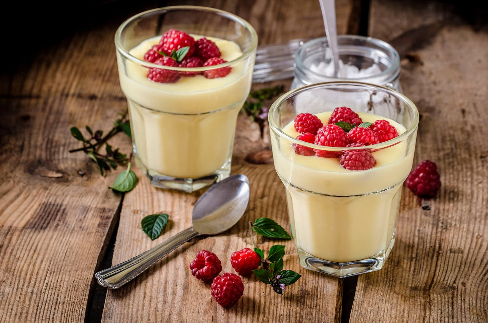

Sabayon

A old and luxurious yet intricate way, to serve desserts or a sauce.
This recipe is for the lovers, a simple yet complicated and elegant way to impress the people around you.
Estimated time for this recipe is around 20 minutes, and serves four
The prerequistes for the Sabayon
- 1 cup Champagne
- 6 Large egg yolks
- 1 cup granulated sugar
- Insert whisk. Add 1 cup Champagne, 6 large egg yolks and 1 cup granulated sugar to the work bowl
- Secure the Cooking Lid with Steam Cap in place. The cooking time is set for 20 minutes at 160 degrees farenheit or
71 degrees celsius
- Sabayon should be thickened and light
- Serve with fresh berries
- Chef pro tip: Add 1/2 cup of heavy whip cream, fold whipped cream into the cooled Sabayon. for a more lighter,luxurious Sabayon
click me to get back to the recipes